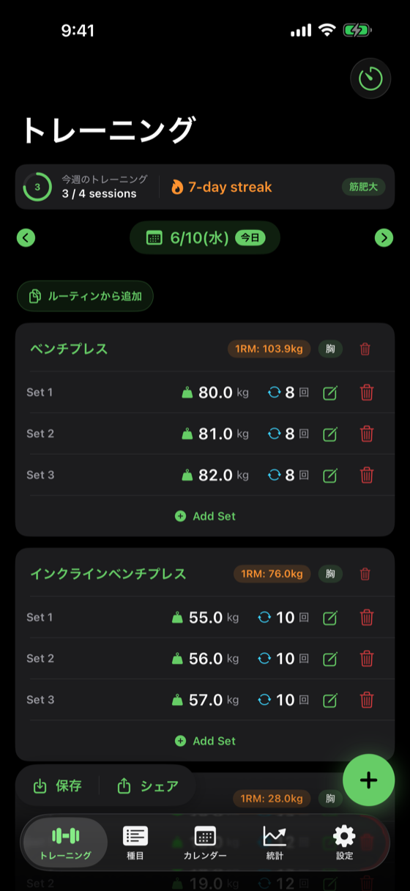

1日分のトレーニングセッションを入力・編集する中心画面

cd ios-apps/WorkoutDiary && fastlane specs で最新UIに自動更新選択した日付のトレーニングセッションを表示・編集する画面。種目ごとにセットを追加し、PR検出・ルーティン適用・インターバルタイマー・シェアを操作できる。アプリの主機能画面。v1.1.0 でホーム画面を全面リデザインし、最速記録 UX を実現した。
| 要素 | 種類 | 説明 |
|---|---|---|
| 週間進捗バッジ | WeeklyProgressBadge | 画面上部。今週のトレーニング回数・ストリーク表示。週間目標設定時のみ |
| 日付セレクター | HStack + DatePicker popover | 「今日」バッジ付き（Calendar.isDateInToday が true の日に緑Capsuleで表示）。前後矢印でも日付移動可 |
| エンプティCTA（記録なし時） | VStack | 「今日のルーティン」プライマリCTA（緑塗りカード + 種目プレビュー）を最優先表示。ルーティン未該当日は「ワークアウトを追加」をプライマリ（accent塗り+onAccent文字）、「ルーティンから追加」をセカンダリ（枠線テキストボタン）として視覚階層を分けて表示（v1.2.1修正） |
| クイックアクションチップ（記録あり時） | 横スクロール HStack | workoutList 上部に表示。「ルーティンから追加」チップのみ。今日のルーティン該当日は非表示 |
| ExerciseCard（記録あり時） | LazyVStack | 種目ごとのカード View（ExerciseCard.swift）。種目ヘッダー右端に削除アイコン。各セット行に編集・削除アイコン常時表示 |
| FAB（右下固定） | WorkoutFAB | 56pt 円形。タップで AddWorkoutView を sheet 表示。safeAreaInset(edge: .bottom) で常時表示 |
| ボトムアクションバー（左下、データあり時） | WorkoutBottomActionBar | 「保存（テンプレート保存）」「シェア」の2ボタンをCapsule形状でまとめる。データなし時は非表示 |
| ツールバー | NavigationStack toolbar | 右端にインターバルタイマーボタン（timer アイコン）のみ。v1.0 の ≡メニューは廃止 |
| PR祝賀 | Overlay | PR検出時に PRCelebrationView を演出 |
| 実績祝賀 | Overlay | AchievementService 経由でバッジ解除時 |
| 優先度 | 表示条件 | UI | アクション |
|---|---|---|---|
| プライマリ | 今日の曜日に割り当てられたルーティンが1件以上ある | 緑塗りカード（AppTheme.accent）+ ルーティン名 + 種目プレビュー1行 | RoutineSuggestionService.applyRoutine() を即時実行 |
| プライマリ（非該当日） | ルーティン未該当（todaysRoutine == nil） | 「ワークアウトを追加」accent塗り Capsule + onAccent文字（大きめCTA） | AddWorkoutView sheet 表示 |
| セカンダリ（非該当日） | 同上、「プライマリ」の下部に配置 | 「ルーティンから追加」枠線テキストボタン（視覚重量を下げて主従を明確化） | TemplateListView sheet 表示 |
| 状態 | 表示内容 |
|---|---|
| 記録なし・ルーティン該当日 | エンプティCTA（プライマリ：今日のルーティンカード） |
| 記録なし・ルーティン非該当日 | エンプティCTA（セカンダリ：「ルーティンから追加」） |
| 記録あり | クイックアクションチップ + ExerciseCard リスト + FAB + ボトムアクションバー |
| PR検出 | PRCelebrationView overlay（閉じるボタン付き・Reduce Motion対応・accessibilityAddTraits(.isModal)）→ シェアプロンプト（セッション内1回のみ） |
| 週間目標達成 | 週間目標達成アラート |
| 実績解除 | AchievementCelebrationView overlay |
| 操作 | 遷移先 |
|---|---|
| FAB タップ | AddWorkoutView (sheet) |
| 今日のルーティンCTA タップ | 即時 applyRoutine（sheet なし） |
| 「ルーティンから追加」タップ | TemplateListView (sheet) |
| セット編集アイコンタップ | EditWorkoutSetView (sheet) |
| テンプレート保存（ボトムバー「保存」） | SaveTemplateView (sheet) |
| シェア（ボトムバー「シェア」） | WorkoutShareSheet (sheet) |
| インターバルタイマー（ツールバー） | IntervalTimerView (sheet) |
| PR検出 → Paywall | PaywallView (sheet) |
@Model final class WorkoutSession {
var id: UUID
var date: Date
var note: String
@Relationship(deleteRule: .cascade, inverse: \WorkoutSet.session)
var sets: [WorkoutSet] = []
}
@Model final class WorkoutSet {
var id: UUID
var exercise: Exercise?
var weight: Double
var reps: Int
var order: Int
var session: WorkoutSession?
var duration: Double // 有酸素: 分
var distance: Double // 有酸素: km
}
// ルーティン機能（v1.1.0）
@Model final class WorkoutTemplate {
var id: UUID
var name: String
var createdAt: Date
var assignedWeekdays: [Int] = [] // 0=日, 1=月, ..., 6=土。空配列=曜日固定なし
var entries: [TemplateEntry] = []
func appliesTo(date: Date) -> Bool // 曜日判定メソッド
}| バージョン | 日付 | 変更内容 |
|---|---|---|
| 1.0 | 2026-05-09 | 初版作成 |
| 1.1 | 2026-05-14 | v1.0.7: 編集・削除アイコンを各セット行右端に常時表示へ変更（左スワイプ削除・長押しコンテキストメニュー廃止）、種目削除ダイアログを日本語化 |
| 1.2 | 2026-05-23 | v1.1.0: ホーム画面リデザイン全体（ツールバー整理・FAB導入・ボトムアクションバー・日付セレクター「今日」バッジ・エンプティCTA階層化・クイックアクションチップ・ExerciseCard切り出し・ルーティン提案CTA）を反映 |
| 1.3 | 2026-07-07 | v1.2.1 UI/UX/A11y監査対応: PR祝福見出し .white→.primary（ライトモード白文字修正）、祝福オーバーレイに閉じるボタン・isModal・Reduce Motion対応、日付送りボタンVoiceOverラベル付与、EditableSetRow combine化、シェア確認ダイアログ1回制限、空状態CTA主従明確化 |